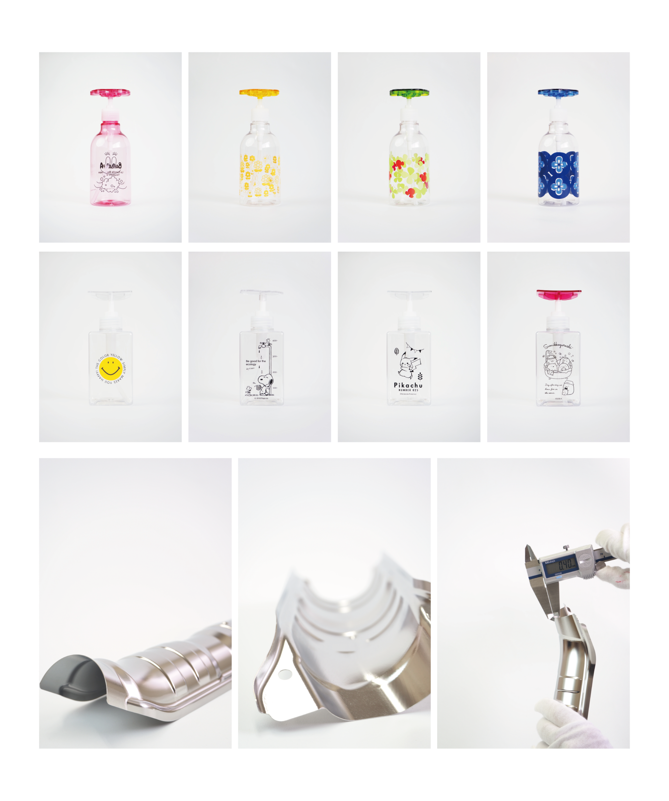

Works
ー 写真撮影/レタッチ ー
自社商品のディスペンサーボトルをはじめとした製品撮影を担当しました。
透明なボトルでも形状や内容物がしっかり視認できるよう、ライティングやアングルを工夫。
製品の特長や“すごさ”が一目で伝わる写真を目指しました。撮影後は明るさ・色味の調整や不要な映り込みの除去などを行い、ポスター・ホームページの商品紹介・パンフレットといった幅広い媒体で活用されました。
使用ソフト: **Photoshop**

Contact
お問い合わせはこちらから